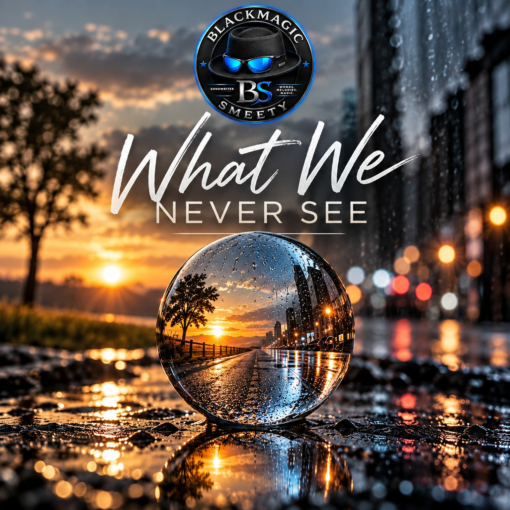

BLACKMAGIC SMEETY · SINGLE · 2026
WHAT WE NEVER SEE
SINGLE · 2026
Über Gefühle und Geschichten, die anderen verborgen bleiben.

BLACKMAGIC SMEETY · SINGLE · 2026
SINGLE · 2026
Über Gefühle und Geschichten, die anderen verborgen bleiben.